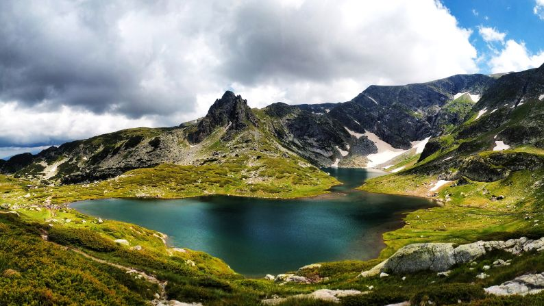

Bulgaria is known for its impressive mountain landscapes, which cover a large portion of the country and provide breathtaking natural scenery. The mountains are not only important for their beauty but also for their role in outdoor tourism, wildlife conservation, and cultural traditions. Many travelers visit Bulgaria specifically to experience its mountains through hiking, skiing, and nature exploration.
One of the most famous mountain ranges is the Rila Mountains. This range is home to Mount Musala, the highest peak in both Bulgaria and the entire Balkan Peninsula. The Rila Mountains are also famous for the Seven Rila Lakes, a group of glacial lakes located high in the mountains. These lakes are a popular destination for hikers and photographers because of their stunning views and peaceful atmosphere.
Another important range is the Pirin Mountains, known for their dramatic rocky peaks and alpine landscapes. Pirin National Park is recognized as a UNESCO World Heritage Site and is home to rare plant species, ancient forests, and unique wildlife. The mountains are also a major destination for winter sports.
The Balkan Mountains, which run across the central part of the country, have played an important role in Bulgarian history. These mountains once served as natural protection during times of war and are now known for their scenic villages, hiking routes, and beautiful valleys.